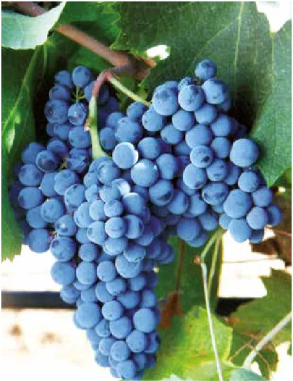

Kapitel 3 · Die portugiesischen Rebsorten
Tinta Barroca (R)
Herkunft:
Eine Sorte aus dem Douro, eine der dort am häufigsten gepflanzten und eine der fünf für die Portweinbereitung empfohlenen Rebsorten.
Weinbeschreibung
Sie hat ein „horizontales“ Aroma: eine schmelzende, milde, zarte Nase, fast eine Einladung, sich darin zu verlieren. Im Vergleich zur Roriz zeigt der Wein eine offene, feminine, aromatische Seite. In feuchteren Regionen hat er oft ein blumiges Bukett (N. Almeida). Die Weinqualität schwankt von Ort zu Ort stark.
Regionale Einstufung:
DOC-Qualitätswein: Porto, Douro, Alenquer, Torres Vedras, Tejo.
Landwein: Minho, Trás-os-Montes, Estremadura, Tejo, Terras do Sado, Alentejano.
Morphologie
Junger Trieb (Form der Triebspitze): offen, mit mittlerer bis starker Anthocyanfärbung, Behaarung meist von geringer Dichte.
Junges Blatt: gelb-kupferfarben, mit mittlerer Anthocyanfärbung. Behaarung mittlerer Dichte.
Junger Trieb: Knoten und Internodien auf der Rückseite rot gestreift, Knospen mit schwacher Anthocyanfärbung. Lange Ranken.

Blütenstand (Blütengeschlecht): zwittrig.
Ausgewachsenes Blatt: mittelgroß, fünfeckig, drei- oder fünflappig, leuchtend grün, unregelmäßiges Profil, leichte Blasigkeit der Oberseite, gewellt am Grund der Stielbucht, gerade Zähne mittlerer Größe, sehr offene V-förmige Stielbucht, offene V-förmige obere Seitenbuchten, aufrechte Haare mittlerer Dichte und spärliche anliegende Haare auf der Unterseite.
Traube: mittelgroß bis groß, locker. Mittellanger bis langer, wenig verholzter Stiel.
Beere: mittelgroß, kurz-elliptisch, blauschwarz, Haut mittelstark, mittel bereift, Fruchtfleisch farblos, weich und sehr saftig, mittellanges Stielchen.
Phänologie:
Austrieb: 2 Tage nach der Castelão.
Blüte: früh, 2 Tage nach der Castelão.
Farbumschlag der Beere: sehr früh, 9 Tage vor der Castelão.
Lesereife der Beere: normal, eine Woche nach der Castelão.
Vegetatives und agronomisches Potenzial:
Wuchskraft der Triebe: hoch.
Schnittholzgewicht: 1,0–1,4 kg je Rebe.
Triebhaltung (Wuchsform): halbaufrecht und plagiotrop.
Länge der Internodien: lang.
Trieblänge: einige Triebe sehr lang und hängend.
Neigung zur Geiztriebbildung: mittel bis hoch.
Mehrfachaustrieb: eher gering.
Fruchtbarkeitsindex der Knospen: 1 = 1,4; 2 = 1,8; 3 = 1,9 Blütenstände je Trieb.
Ertrag: hoch bis sehr hoch (8–16 t/ha), je nach Klon und Umweltbedingungen. Statistischer RNSV-Wert: 1,46 kg/Rebe (Mittel von mindestens 40 Klonen in Vila Flor über 6 Jahre).
Ertragsbeständigkeit: Gefahr der Kleinbeerigkeit. Mittlerer Ertrag im Jahr nach einem hohen Ertrag.
Gleichmäßigkeit des Ertrags: gleichmäßig, mit gutem Ertrag an allen Reben. In Jahren übermäßigen Ertrags (12–25 t/ha) kann die Homogenität sinken.
Winkler-Index: 1.413 bei 16 t/ha Ertrag (Montemor).
Empfindlichkeit gegenüber abiotischen Faktoren: empfindlich gegenüber extremer Hitze bei gleichzeitigem Wassermangel; führt zum Austrocknen der Trauben.
Anfälligkeit für Pilzkrankheiten: anfällig für Peronospora und Oidium. Dank lockerer Trauben tolerant gegenüber Botrytis. Mäßig anfällig für Exkoriose.
Traubengröße: mittel bis groß (250 g).
Dichte der Traube: gering.
Beerenhaut: dünn.
Erziehungssystem: für alle traditionellen Erziehungssysteme geeignet.
Bodenansprüche: tiefgründige, fruchtbare Böden mit etwas Feuchtigkeit; reagiert in großen Höhen sehr gut.
Klimaansprüche: Ein steiler Anstieg des Alkoholgehalts während des Farbumschlags kann in sehr heißen und trockenen Zonen zu extremer Überreife führen.
Bewässerung: Gefahr übermäßigen Ertrags mit entsprechenden Reifeproblemen.
Verrieseln/Kleinbeerigkeit: anfällig.
Verderb reifer Beeren: Gefahr der Überreife.
Eignung für maschinelle Lese: gut geeignet bei extremer Hitze.
Önologie:
Weintyp: Qualitätswein, Dessertwein.
Potenzieller Alkoholgehalt: hoch (13–15 % vol.) unter günstigen Bedingungen. Statistischer RNSV-Wert: 14,56 % vol. (Mittel von mindestens 40 Klonen in Vila Flor über 4 Jahre).
Natürliche Säure des Mostes: mittel (4–6 g/l). (Statistischer RNSV-Wert: 3,496 g/l, Mittel von mindestens 40 Klonen in Vila Flor über 4 Jahre.)
Gesamtanthocyane: 580–780, je nach Klon und Umwelt. (Statistischer RNSV-Wert: 806,57 mg/l, Mittel von mindestens 40 Klonen in Vila Flor über 1 Jahr.)
Gesamtphenolindex des Mostes (bei 280 nm): 31–36. (Statistischer RNSV-Wert: 56,04, Mittel von mindestens 40 Klonen in Vila Flor über 4 Jahre.)

Oxidationsrisiko des Mostes: gering.
Farbintensität des Weins: 6,60–7,20, mittel. Die Beerenhaut hat eine hohe Anthocyanfärbung. Scheint mit der Reife Farbe zu verlieren.
Farbton des Weins: 0,54–0,64. Selbst gereifte Weine behalten eine rubinrote Farbe.
Tannine: monomer 1,3–1,7 mg/l; oligomer 1,1–3,7 mg/l; polymer 4,3–10,9 mg/l (bei Vergärung mit dem Most).
Gesamtpolyphenolindex (bei 280 nm): 21.
Oxidationsrisiko des Weins: gering.
Aromaprofil: (Nach Untersuchungen im Douro 1999.) Übertraf die Erwartungen mit einer hohen Konzentration freier Terpene (90 μg/l), die für die blumigen Aromen verantwortlich sind. Der Gehalt an ß-Damascenon lag über 2 μg/l, dazu einige Norisoprenoide. Im Vergleich zu anderen roten Sorten des Douro sind die sensorischen Werte, einschließlich Ausgewogenheit und Nachhaltigkeit im Mund, die besten der bisher in der Region eingestuften Weine.
Alterungspotenzial: insgesamt gut, besonders geeignet für den Fassausbau.